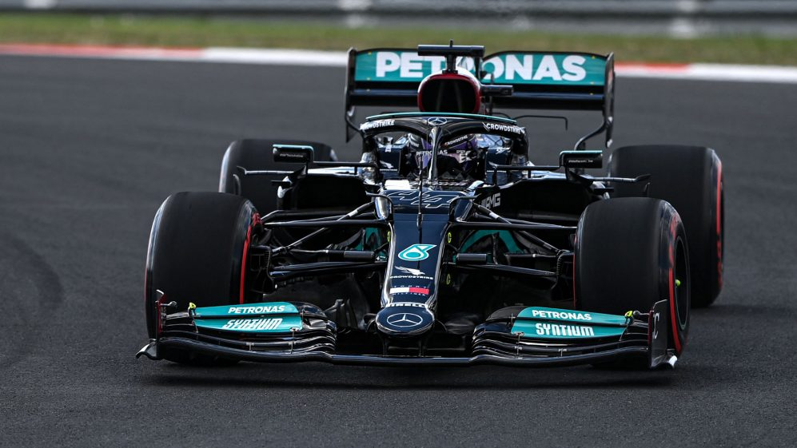

Formula 1
Formula 1 (Prescurtata in mod obisnuit ca F1) este cea mai importanta competitie de curse cu monoposturi din lume. Debutand in 1946, cu primul Campionat Mondial disputat in 1950, Formula 1 este guvernata de FIA.
In prezent, Campionatul Mondial de Formula 1 este disputat de 10 echipe, fiecare avand cel putin 2 piloti principali si un pilot de rezerva/test, pe un total de 23 de runde, cunoscute mai bine drept Grand Prix-uri. Sunt acordate pana la 34 de puncte castigatorului unui eveniment, astfel pilotul cu cele mai multe puncte la sfarsitul sezonului devine Campionul Mondial al pilotilor, iar punctele obtinute de echipa unui pilot vor contribui la Campionatul Mondial al Constructorilor.
Weekend Formula 1
Un Grand Prix de Formula 1 se desfasoara pe decursul a 3 zile - Vineri, Sambata si Duminica. Fiecare zi este foarte importanta pentru piloti si echipe, deoarece acestia colecteaza date importante despre circuit si masina.
Vineri: Vineri au loc antrenamentul liber 1 si antrenamentul liber 2 (FP1 si FP2). Deobicei, echipele desfasoara programe de antrenament pentru cursa, cu un rezervor plin. Aceste sesiuni sunt cruciale pentru a obtine date si informatii pentru restul weekend-ului, ajutand la configurarea masinii pentru cursa.
Sambata: Sambata consta in antrenamentul liber 3 (FP3) si sesiunea de calificari extrem de importanta. In FP3, echipele desfasoara antrenamente pentru calificari, cu o masina configurata pentru un singur tur rapid si un rezervor aproape gol.
Apoi trecem la calificari. Calificarile decid locul de pe grila de unde un pilot incepe cursa. Fiecare pilot stabileste cei mai rapizi timpi posibili pe circuit in calificari si asta decide pozitia lui de pe grila.
O sesiune de calificari este impartita in 3 etape, Q1, Q2 si Q3.
Duminica: Duminica este cea mai importanta zi, pentru ca are loc cursa propriu-zis. Formatia alcatuita din calificari determina ordinea de incepere a cursei. La sfarsitul cursei, are loc ceremonia podiumului, iar primilor 3 clasati li se ofera trofee si sampanie, in timp ce pe podium se canta imnurile nationale ale pilotului castigator si ale echipei.